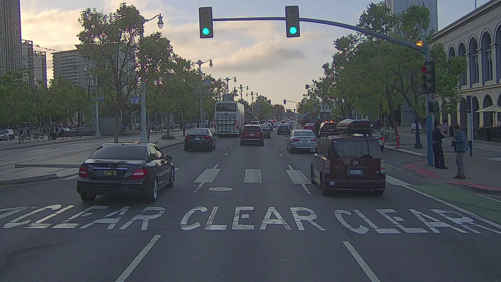
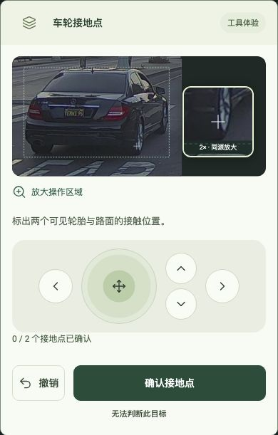
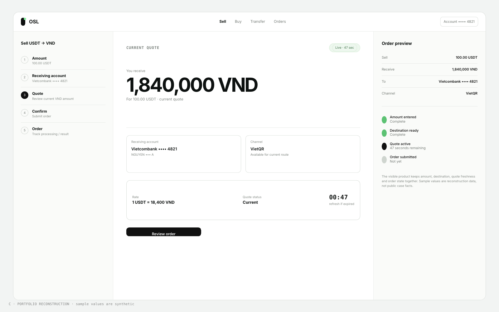
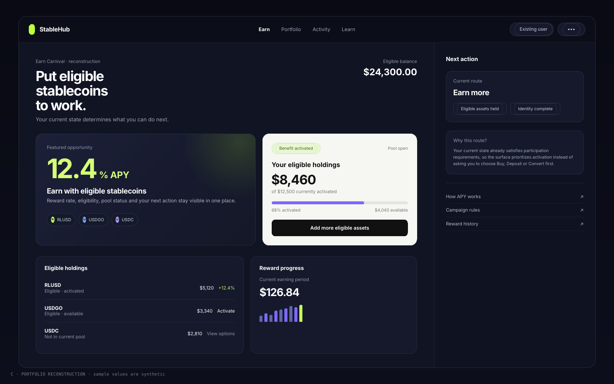

YUNJI MA / PRODUCT EXPERIENCE DESIGNER
复杂世界里的
清晰判断。
从一帧图像、一笔交易、一个用户状态出发，设计让人真正看得懂、做得对的产品体验。
SELECTED WORK / 2026SCROLL TO EXPLORE ↓


01 / 从复杂图像到人的任务Maro把需要判断的部分，清楚地交给人。

02 / 资金承诺OSL让金额、收款对象与订单状态始终连在一起。

03 / 当前状态与下一步StableHub同一机会，不同状态，给出正确的行动。
9MA — 未确认的首页视觉方向稿；案例链接进入现有版本。界面为作品集重构；示例数据并非历史产品指标。照片来自项目素材。
BEYOND THE FRAME / 设计视角
不是展示更多画面，
而是让关键关系
变得可见。
这个方向把每个案例当作一件值得细看的作品。滚动负责建立问题的尺度，切换负责比较不同项目，完整案例负责交代设计过程与证据。